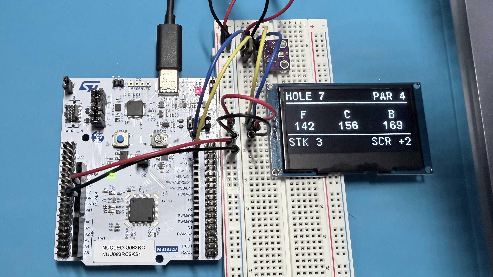

Electrical & Computer Engineering Student

The STM32 Golf Caddy is a personal embedded systems project I started to expand my practical experience with microcontroller firmware and hardware integration while building something related to one of my favorite hobbies: golf. Rather than developing a project solely as a technical exercise, my goal is to build a portable device that I would actually use on the golf course.
The project is built around an STM32U083RC microcontroller and is being developed incrementally as I learn and integrate new embedded concepts. The current prototype combines environmental sensing and an OLED user interface over I²C, with future development planned for GPS-based distance measurements, battery monitoring, a complete user interface, and eventually a custom PCB and portable enclosure.
Throughout the project, I am focusing on writing modular embedded C, developing peripheral drivers, integrating and debugging hardware, and using tools such as a logic analyzer and multimeter to diagnose system behavior. Each new feature is intended to introduce another aspect of embedded system development while moving the prototype toward a complete device I can use during a round of golf.
I developed the BME280 interface in C using STM32 HAL I2C functions. The firmware reads device-specific calibration coefficients and applies the required compensation calculations to convert raw ADC measurements into usable temperature, humidity, and pressure values. This work strengthened my understanding of datasheet-driven driver development, register-level peripheral communication, and debugging embedded sensor interfaces.
The SSD1309 display is driven through a framebuffer-based OLED driver. The firmware initializes the display, writes commands and display data over I2C, renders text using a bitmap font, and transfers the framebuffer to the screen. The current status screen updates once per second with live sensor information, providing a foundation for the future golf-course user interface.
Peripheral integration has also been used as a practical debugging exercise. During OLED and I2C bring-up, I investigated display failures and unstable behavior by checking supply voltage, continuity/resistance, wiring, and digital bus activity. A logic analyzer is now part of the development workflow for inspecting I2C transactions and validating communication between the STM32 and connected peripherals.
Status: Active development — BME280 sensing and SSD1309 display integration are operational; GPS and battery monitoring are next.